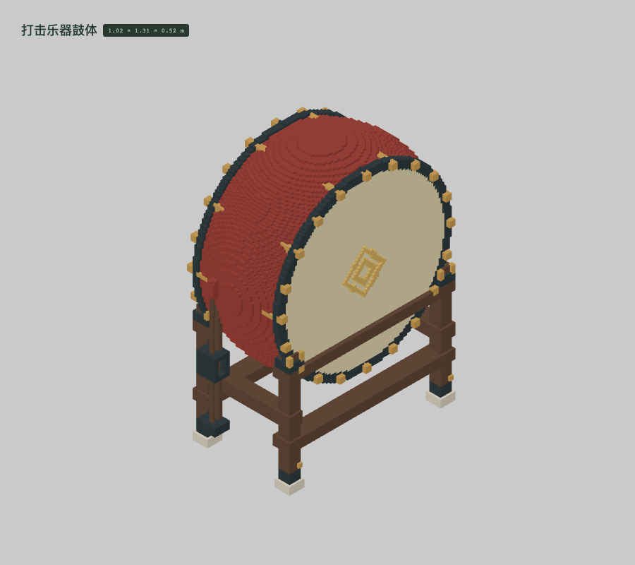
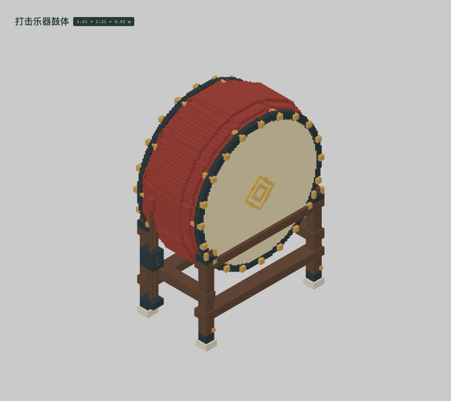
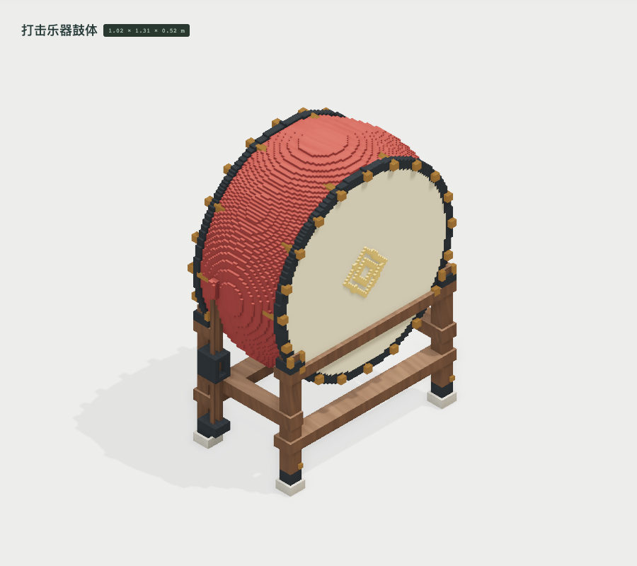
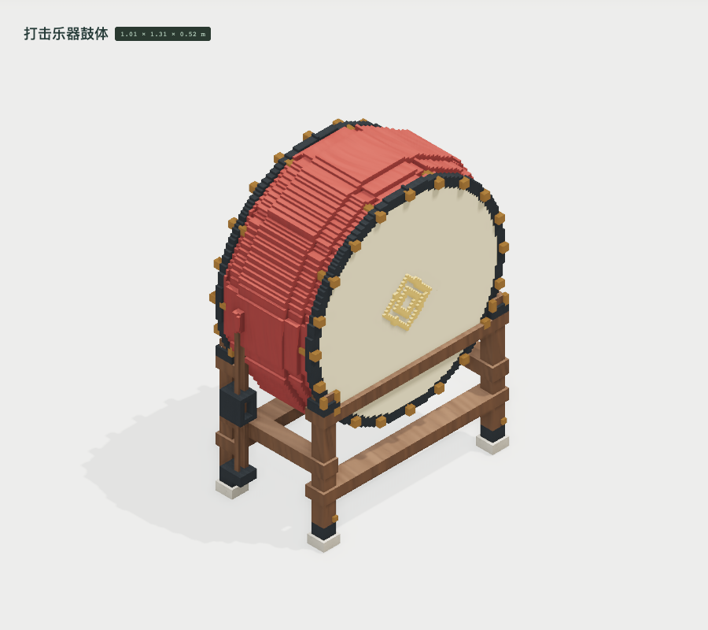
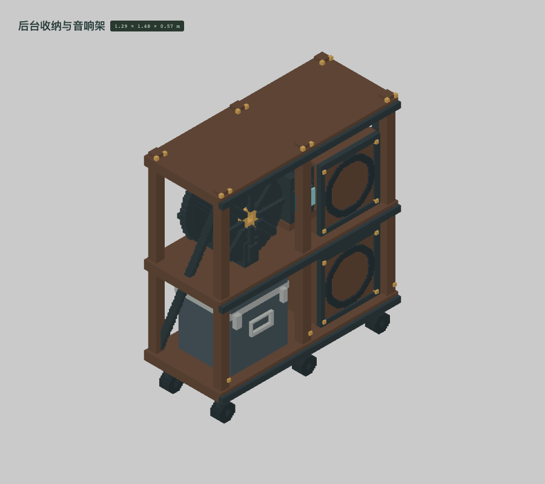
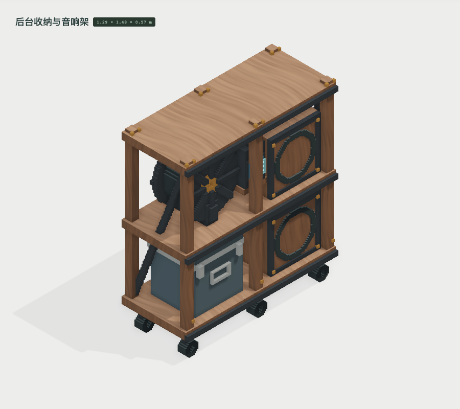
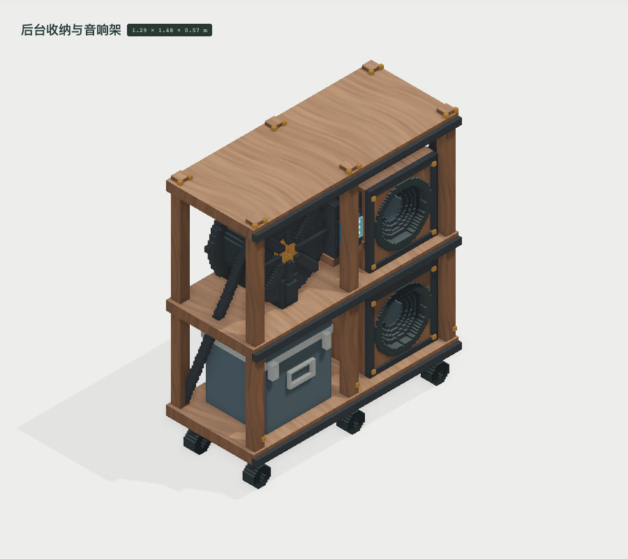

鼓腹由密集圆弧阶梯改为十二面拼板，保留空鼓腔、独立鼓膜和浅接缝。占用格 111,758 → 115,351；三角形 33,058 → 14,542。材质映射及参数不变。




切出音箱前板的真实圆孔，露出已有振膜与防尘帽；没有用贴图覆盖木面。占用格 357,804 → 353,262；三角形 14,800 → 15,096。材质映射及参数不变。



 修正后 · 素色验形
修正后 · 素色验形